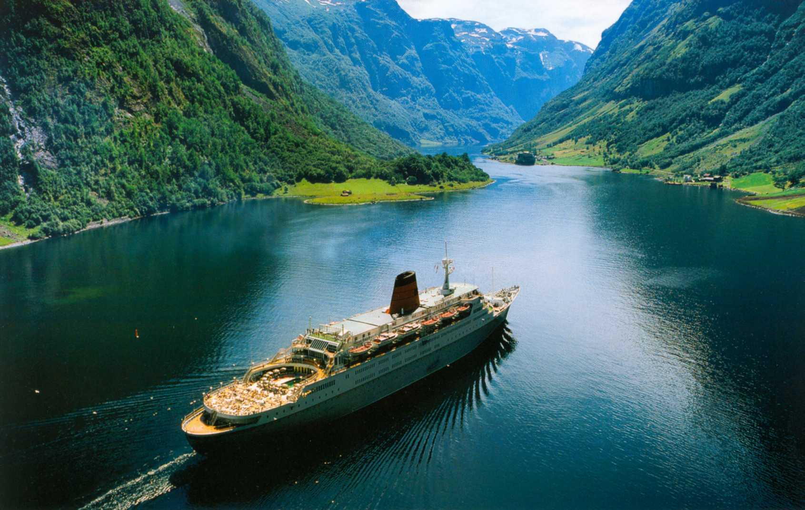
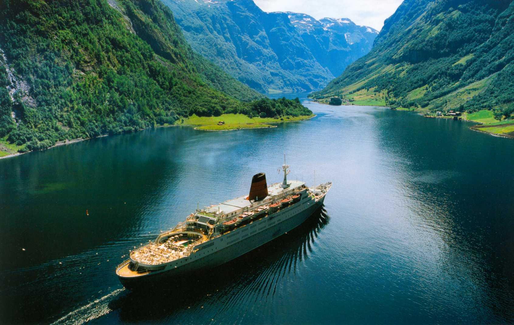

| On a Norwegian scale, Bergen is a large city, but one with a small-town charm and atmosphere. Its passionately patriotic inhabitants are proud of their many-sided city and its history and cultural traditions. Many are only happy to direct visitors to their favourite local attraction, coffee-shop or restaurant. | Founded more than 900 years ago, Bergen has roots to the Viking Age and beyond. As one of the main offices of the Hanseatic League, Bergen was for several hundred years the centre of prosperous trade between Norway and the rest of Europe. Bryggen, ("The Hanseatic Wharf") is the most obvious remnant from this time, and is today home to many of the city’s restaurants, pubs, craft shops and historical museums. |
 

©Olesia, 2017